Given a specific point $(x_0, y_0)$, there are 2 ways to find the shortest distance from that point to a function $f(x)$ - analytically (using calculus) or numerically (using iterative algorithms). This project will solve both the analytical approach and the numerical approach for the function $y = x^2 + 5$ and for the points $(0, 0), (-4, 0), (-8, 0), (2, 0), (6, 0)$.
The euclidean distance d between a given point $(x_0, y_0)$ and any point $(x, y)$ on a function's curve is given by: $$d = \sqrt{(x-x_0)^2 + (y - y_0)^2}$$ However, because a square root is expensive to calculate, computer algorithms always optimize the squared distance (D) instead. $$D(x) = (x-x_0)^2 + (f(x)-y_0)^2$$ The goal of this project is to find the point $x$ that minimizes $D$, which also minimizes $d$ and therefore gives the shortest possible distance.
Consider the function $y = f(x) = x^2 + 5$ and a specific point $(x_0, y_0)$. Since this function is smooth and differentiable throughout its domain, we can solve for the exact shortest distance using calculus. First, we take the derivative of the squared distance function $D(x)$, $$D'(x) = 2(x-x_0) + 2(f(x)-y_0)f'(x)$$ Then, we equate the derivative to zero to find the critical points, ie the values of $x$ for which $D(x)$ is minimum. $$ \begin{aligned} D'(x) &= 0 \\ &\implies 2(x-x_0) + 2(f(x)-y_0)f'(x) = 0 \\ \end{aligned} $$ Simplyfying the expression and solving for x, we get, $$x = x_0 - f'(x)(f(x)-y_0)$$ For the given function $f(x) = x^2 + 5$, it's derivative is $f'(x) = 2x$. Substituting these values in the above expression, we have, $$ \begin{aligned} x &= x_0 - 2x(x^2 + 5 - y_0) \\ &\implies x = x_0 - 2x^3 - 10x + 2xy_0 \\ &\implies 2x^3 + 11x - 2xy_0 - x_0 = 0 \end{aligned} $$ This gives the main equation that will be used to determine the minimum distance for each point in the analytical approach. $$ \boxed{2x^3 + 11x - 2xy_0 - x_0 = 0} \tag{1} $$ For each point $(x_0, y_0)$, the general process is to substitute the values of $x_0$ and $y_0$ into Equation (1). This gives the value of $x$ for which $D(x)$, and hence $d$, is minimized. The resulting value of $x$ is then substituted back into the original distance formula to obtain the minimum distance.
The numpy.roots() function is used to solve Equation (1) for
each given point. The resulting real root is the value of $x$ that
minimizes $D(x)$, which is then substituted into the distance formula to
obtain the minimum distance.
$x_0 = 0,\quad y_0 = 0$
Substituting $(0, 0)$ into Equation (1) yields:
$$2x^3 + 11x = 0$$The real root is $x^* = 0$. Substituting into the distance formula:
$$d = \sqrt{(0 - 0)^2 + (f(0) - 0)^2}$$Since $f(0) = 0^2 + 5 = 5$, this becomes:
$$d = \sqrt{(0 - 0)^2 + (5 - 0)^2} = 5$$$x_0 = -4,\quad y_0 = 0$
Substituting $(-4, 0)$ into Equation (1) yields:
$$2x^3 + 11x + 4 = 0$$The real root is $x^* \approx -0.355$. Substituting into the distance formula:
$$d = \sqrt{(-0.355 - (-4))^2 + (f(-0.355) - 0)^2}$$Since $f(-0.355) = (-0.355)^2 + 5 \approx 5.13$, this becomes:
$$d = \sqrt{(-0.355 - (-4))^2 + (5.13 - 0)^2} \approx 6.29$$$x_0 = -8,\quad y_0 = 0$
Substituting $(-8, 0)$ into Equation (1) yields:
$$2x^3 + 11x + 8 = 0$$The real root is $x^* \approx -0.672$. Substituting into the distance formula:
$$d = \sqrt{(-0.672 - (-8))^2 + (f(-0.672) - 0)^2}$$Since $f(-0.672) = (-0.672)^2 + 5 \approx 5.45$, this becomes:
$$d = \sqrt{(-0.672 - (-8))^2 + (5.45 - 0)^2} \approx 9.13$$$x_0 = 2,\quad y_0 = 0$
Substituting $(2, 0)$ into Equation (1) yields:
$$2x^3 + 11x - 2 = 0$$The real root is $x^* \approx 0.181$. Substituting into the distance formula:
$$d = \sqrt{(0.181 - 2)^2 + (f(0.181) - 0)^2}$$Since $f(0.181) = (0.181)^2 + 5 \approx 5.03$, this becomes:
$$d = \sqrt{(0.181 - 2)^2 + (5.03 - 0)^2} \approx 5.35$$$x_0 = 6,\quad y_0 = 0$
Substituting $(6, 0)$ into Equation (1) yields:
$$2x^3 + 11x - 6 = 0$$The real root is $x^* \approx 0.520$. Substituting into the distance formula:
$$d = \sqrt{(0.520 - 6)^2 + (f(0.520) - 0)^2}$$Since $f(0.520) = (0.520)^2 + 5 \approx 5.27$, this becomes:
$$d = \sqrt{(0.520 - 6)^2 + (5.27 - 0)^2} \approx 7.60$$Table 1 summarizes the analytical results. These values serve as the reference when comparing against the numerical approach.
| Point $(x_0, y_0)$ | Real root $x^*$ | Minimum distance $d$ |
|---|---|---|
| $(0, 0)$ | $0$ | $5$ |
| $(-4, 0)$ | $\approx -0.355$ | $\approx 6.29$ |
| $(-8, 0)$ | $\approx -0.672$ | $\approx 9.13$ |
| $(2, 0)$ | $\approx 0.181$ | $\approx 5.35$ |
| $(6, 0)$ | $\approx 0.520$ | $\approx 7.60$ |
Solving $D'(x) = 0$ symbolically can be impossible when $f(x)$ is complicated. Numerical root-finding and optimization algorithms avoid this by approximating the minimizer iteratively. Two algorithms are used here.
If the first and second derivatives of $f(x)$ are easy to compute, Newton's method can be applied to $D'(x) = 0$. With $D(x) = (x - x_0)^2 + (f(x) - y_0)^2$:
$$D'(x) = 2(x - x_0) + 2\,(f(x) - y_0)\,f'(x)$$ $$D''(x) = 2 + 2\,f'(x)^2 + 2\,(f(x) - y_0)\,f''(x)$$ $$x_{k+1} = x_k - \frac{D'(x_k)}{D''(x_k)}$$Iteration stops when $|x_{k+1} - x_k|$ falls below a tolerance, and the shortest distance is computed from the final $x$.
def find_distance_newton(x0, y0, f, df, ddf, initial_guess=0.0,
tolerance=1e-7, max_iter=100):
x = initial_guess
for _ in range(max_iter):
# D'(x)
D_prime = 2 * (x - x0) + 2 * (f(x) - y0) * df(x)
# D''(x)
D_double_prime = 2 + 2 * (df(x)**2) + 2 * (f(x) - y0) * ddf(x)
# Newton-Raphson update step
next_x = x - D_prime / D_double_prime
if abs(next_x - x) < tolerance:
x = next_x
break
x = next_x
shortest_distance = ((x - x0)**2 + (f(x) - y0)**2)**0.5
return shortest_distance, xHere $f'(x) = 2x$ and $f''(x) = 2$, so for $y_0 = 0$:
$$D'(x) = 2(x - x_0) + 4x(x^2 + 5), \qquad D''(x) = 12x^2 + 22$$Every run starts from the initial guess $x_0^{(0)} = 0$.
The method converges immediately: $x^* = 0$, $d = \sqrt{0 + 5^2} = 5$.
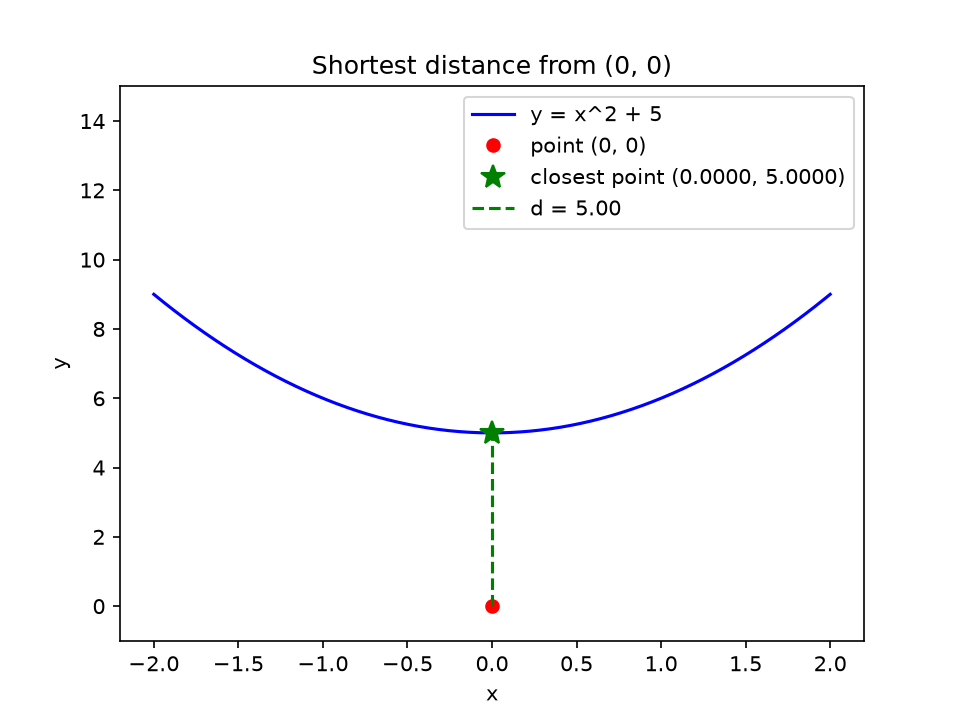
$k=0$: $x = 0$, $D' = 8$, $D'' = 22$ $\Rightarrow$ $x_1 = -0.3636$
$k=1$: $x = -0.3636$, $D' = -0.1923$, $D'' = 23.5868$ $\Rightarrow$
$x_2 = -0.3555$
$k=2$: $x = -0.3555$, $D' = -0.0003$, $D'' = 23.5164$ $\Rightarrow$
$x_3 = -0.3555$
Converges to $x^* \approx -0.3555$, giving $d \approx 6.29$, which matches the analytical result.
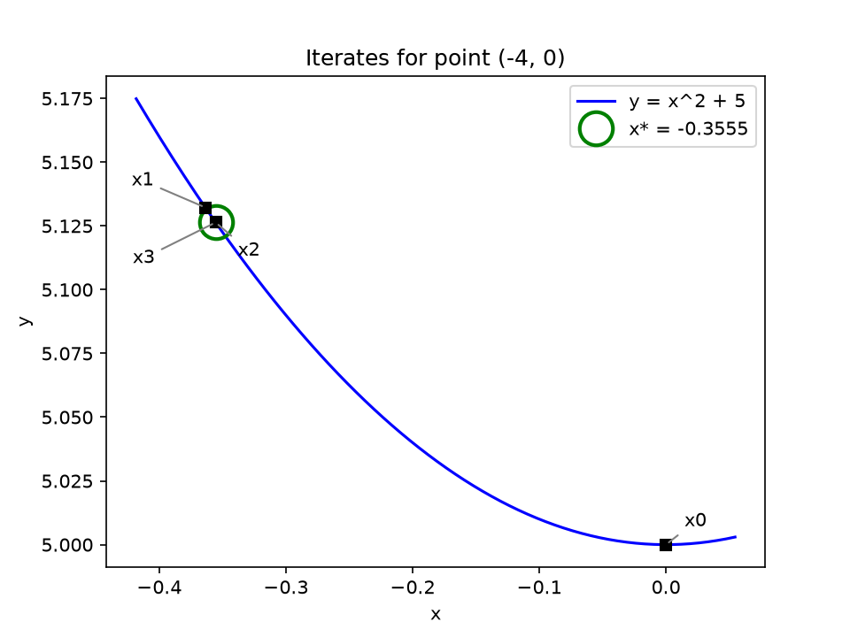
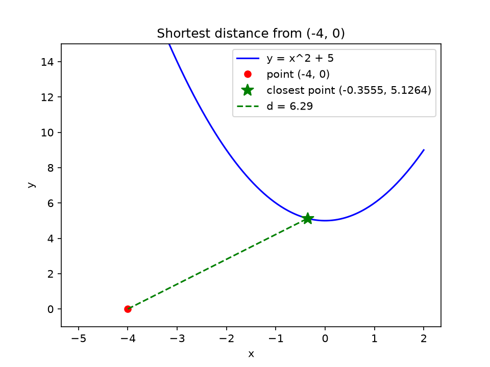
$k=0$: $x = 0$, $D' = 16$, $D'' = 22$ $\Rightarrow$ $x_1 = -0.7273$
$k=1$: $x = -0.7273$, $D' = -1.5387$, $D'' = 28.3471$ $\Rightarrow$
$x_2 = -0.6730$
$k=2$: $x = -0.6730$, $D' = -0.0251$, $D'' = 27.4350$ $\Rightarrow$
$x_3 = -0.6721$
Converges to $x^* \approx -0.6721$, giving $d \approx 9.13$, which matches the analytical result.
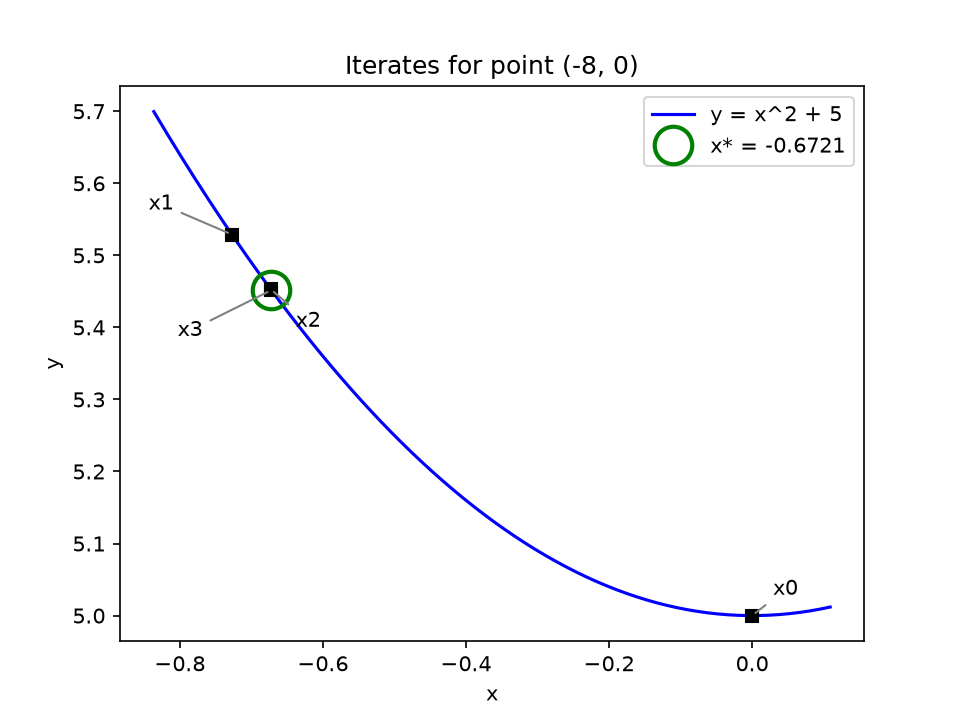
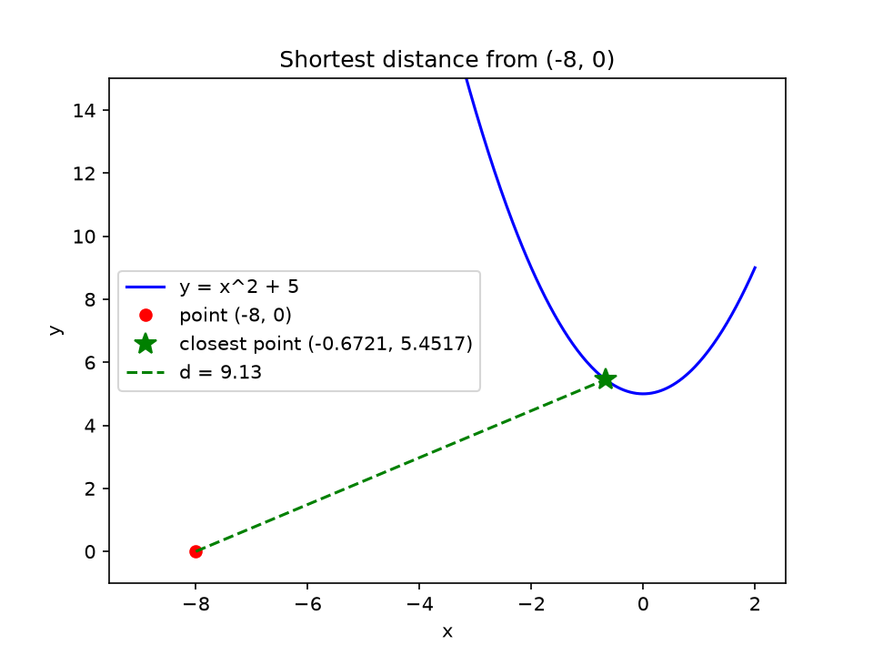
$k=0$: $x = 0$, $D' = -4$, $D'' = 22$ $\Rightarrow$ $x_1 = 0.1818$
$k=1$: $x = 0.1818$, $D' = 0.0240$, $D'' = 22.3967$ $\Rightarrow$ $x_2
= 0.1807$
$k=2$: $x = 0.1807$, $D' \approx 0$, $D'' = 22.3920$ $\Rightarrow$
$x_3 = 0.1807$
Converges to $x^* \approx 0.1807$, giving $d \approx 5.35$, which matches the analytical result.
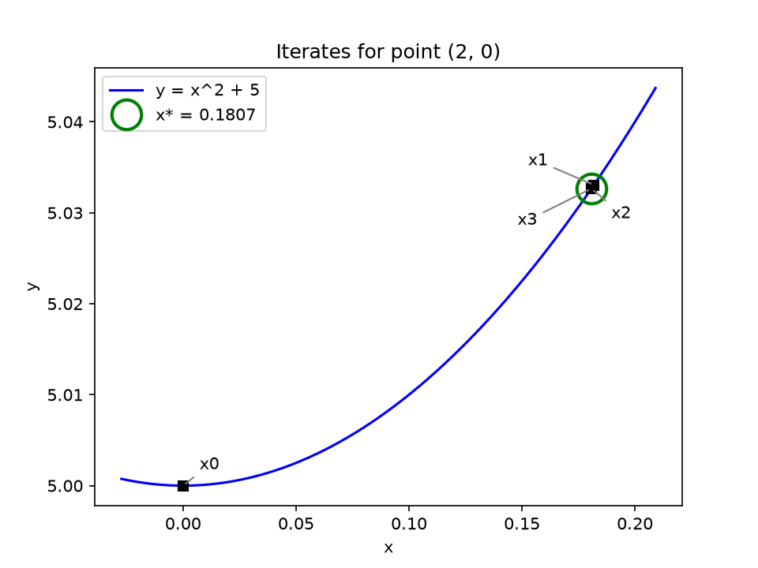
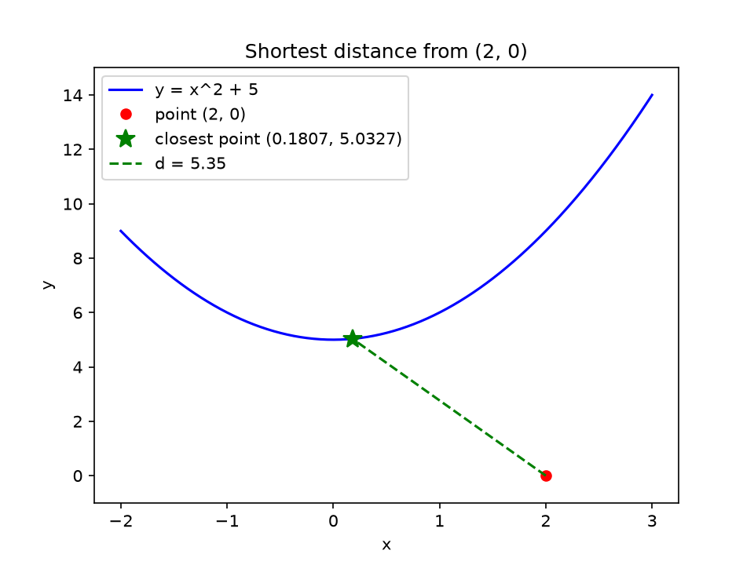
$k=0$: $x = 0$, $D' = -12$, $D'' = 22$ $\Rightarrow$ $x_1 = 0.5455$
$k=1$: $x = 0.5455$, $D' = 0.6491$, $D'' = 25.5702$ $\Rightarrow$ $x_2
= 0.5201$
$k=2$: $x = 0.5201$, $D' = 0.0042$, $D'' = 25.2457$ $\Rightarrow$ $x_3
= 0.5199$
Converges to $x^* \approx 0.5199$, giving $d \approx 7.60$, which matches the analytical result.
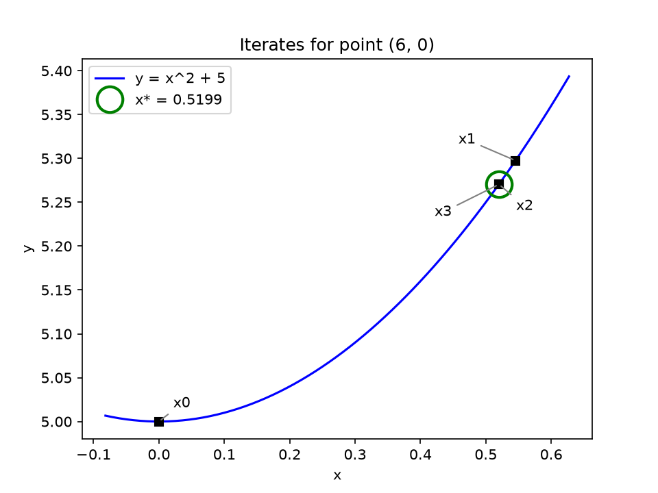
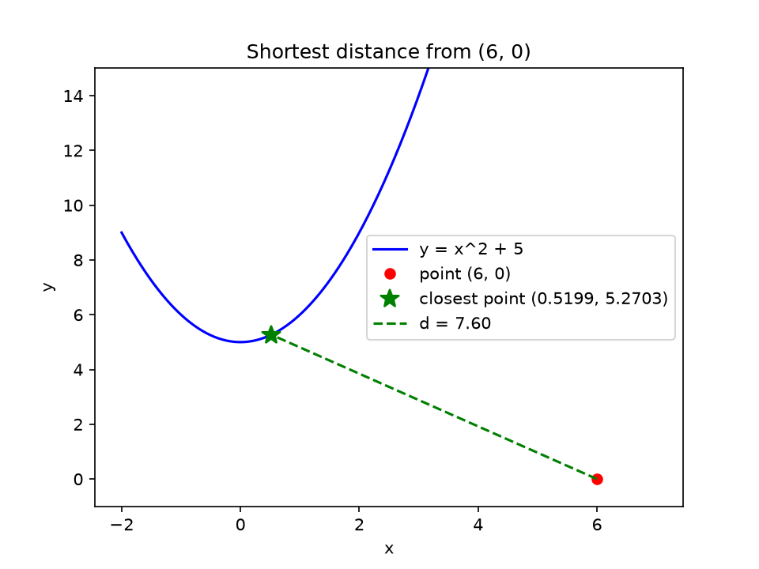
The figures above were generated with the following Python script:
import numpy as np
import matplotlib.pyplot as plt
f = lambda x: x**2 + 5
df = lambda x: 2 * x
ddf = lambda x: 2
def newton_steps(x0, y0, x=0.0, n_steps=3):
"""Run a few Newton-Raphson steps on D'(x) = 0 and return every x."""
xs = [x]
for _ in range(n_steps):
D_prime = 2 * (x - x0) + 2 * (f(x) - y0) * df(x)
D_double_prime = 2 + 2 * df(x)**2 + 2 * (f(x) - y0) * ddf(x)
x = x - D_prime / D_double_prime
xs.append(x)
return xs
def plot_iterates(x0, y0, steps, x_star):
"""Zoomed plot: iterates on the curve, converging to x*."""
lo, hi = min(steps), max(steps)
pad = 0.15 * (hi - lo)
x = np.linspace(lo - pad, hi + pad, 200)
plt.plot(x, f(x), "b-", label="y = x^2 + 5")
# ring around the converged point
plt.plot(x_star, f(x_star), "o", markersize=18, markerfacecolor="none",
markeredgecolor="green", markeredgewidth=2,
label=f"x* = {x_star:.4f}")
# each iterate, labelled x0, x1, x2, x3
offsets = [(10, 10), (-40, 12), (12, -18), (-45, -22)]
for k, xk in enumerate(steps):
plt.plot(xk, f(xk), "ks", zorder=2)
plt.annotate(f"x{k}", (xk, f(xk)), textcoords="offset points",
xytext=offsets[k],
arrowprops=dict(arrowstyle="-", color="gray"))
plt.title(f"Iterates for point ({x0}, {y0})")
plt.xlabel("x")
plt.ylabel("y")
plt.legend()
plt.savefig(f"media/iterates_{x0}_{y0}.png", dpi=150)
plt.close()
def plot_distance(x0, y0, x_star):
"""Full plot: the point, the curve, and the shortest distance."""
d = np.hypot(x_star - x0, f(x_star) - y0)
x = np.linspace(min(x0, -1) - 1, max(x0, 1) + 1, 400)
plt.plot(x, f(x), "b-", label="y = x^2 + 5")
plt.plot(x0, y0, "ro", label=f"point ({x0}, {y0})")
plt.plot(x_star, f(x_star), "g*", markersize=12,
label=f"closest point ({x_star:.4f}, {f(x_star):.4f})")
plt.plot([x0, x_star], [y0, f(x_star)], "g--", label=f"d = {d:.2f}")
plt.title(f"Shortest distance from ({x0}, {y0})")
plt.xlabel("x")
plt.ylabel("y")
plt.ylim(-1, 15)
plt.legend()
plt.savefig(f"media/distance_{x0}_{y0}.png", dpi=150)
plt.close()
for x0, y0 in [(0, 0), (-4, 0), (-8, 0), (2, 0), (6, 0)]:
steps = newton_steps(x0, y0)
plot_distance(x0, y0, steps[-1])
if steps[0] != steps[-1]: # (0, 0) never moves, so nothing to zoom in on
plot_iterates(x0, y0, steps, steps[-1])
find_distance_newton takes $f$, $f'$ and $f''$ as inputs, so
the same routine works for any twice-differentiable function, and only the
three function definitions change. Three more cases are shown below: a
cubic polynomial, an exponential, and a radical function. The radical case
needs a positive initial guess, since $f'(x)$ is undefined at $x = 0$.
$f'(x) = \frac{3}{4}x^2 - 1$, $f''(x) = \frac{3}{2}x$. Initial guess: $0$.
Point $(4, 0)$: $x^* \approx 2.2572$, closest point $(2.2572,\
0.6178)$, $d \approx 1.8491$
Point $(-4, 2)$: $x^* \approx -1.7768$, closest point $(-1.7768,\
0.3745)$, $d \approx 2.7541$
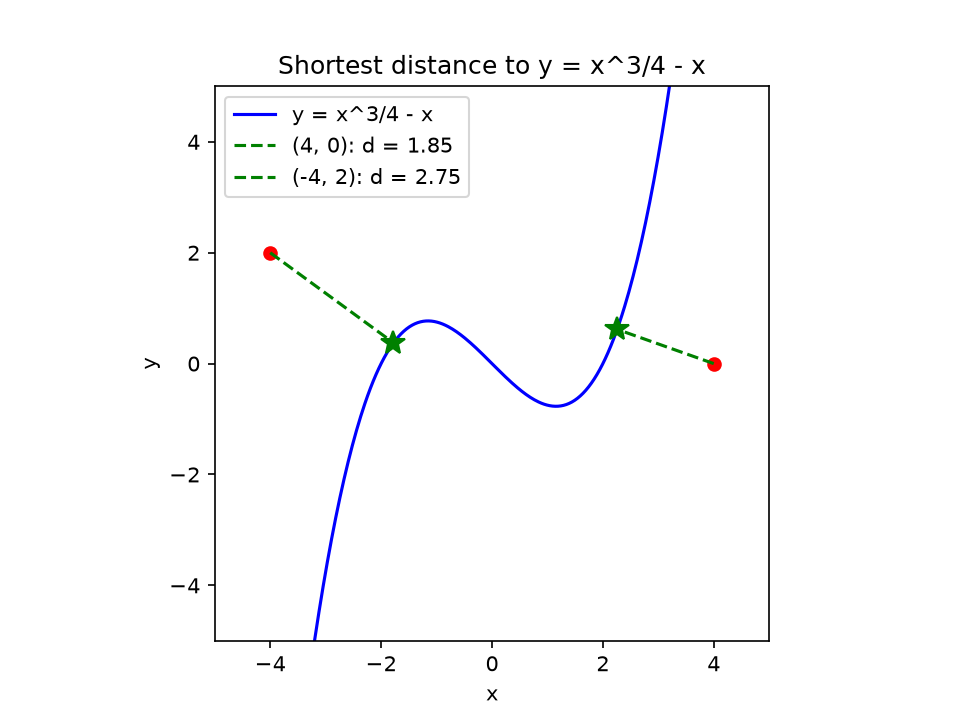
$f'(x) = f''(x) = e^x$. Initial guess: $0$.
Point $(2, 0)$: $x^* \approx 0.2731$, closest point $(0.2731,\
1.3141)$, $d \approx 2.1700$
Point $(0, -2)$: $x^* \approx -0.9371$, closest point $(-0.9371,\
0.3918)$, $d \approx 2.5688$
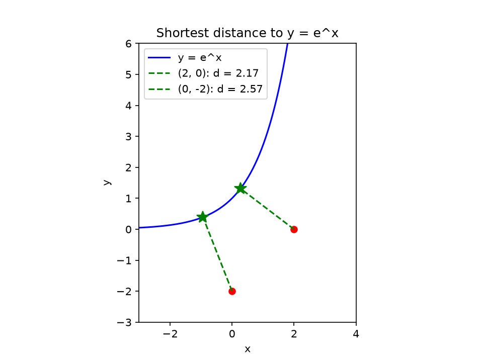
$f'(x) = \frac{1}{2\sqrt{x}}$, $f''(x) = -\frac{1}{4x^{3/2}}$. Initial guess: $1$.
Point $(4, 0)$: $x^* = 3.5000$, closest point $(3.5000,\ 1.8708)$, $d
\approx 1.9365$
Point $(2, 3)$: $x^* \approx 2.4570$, closest point $(2.4570,\
1.5675)$, $d \approx 1.5036$
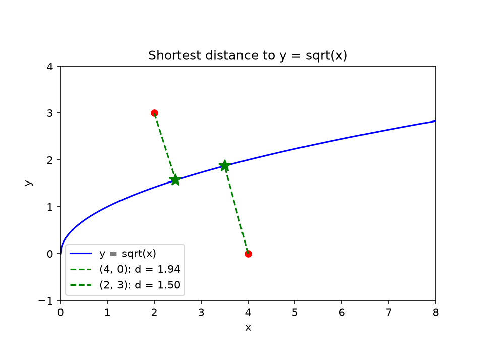
Newton's method converges to a local minimum of $D(x)$ near the initial guess, so for curves like the cubic, which can have more than one, the result depends on where the iteration starts. The points above converge to the true minimum.
The results and figures above were produced with the following script:
import numpy as np
import matplotlib.pyplot as plt
# find_distance_newton is the same function as in Section 1.3.1
def run_case(name, label, f, df, ddf, guess, points, xlim, ylim):
"""Find the shortest distance for each point and plot the results."""
x = np.linspace(*xlim, 400)
plt.plot(x, f(x), "b-", label=f"y = {label}")
for x0, y0 in points:
d, x_star = find_distance_newton(x0, y0, f, df, ddf, initial_guess=guess)
y_star = f(x_star)
print(f"{label:10s} ({x0}, {y0}): x* = {x_star:.4f}, "
f"closest = ({x_star:.4f}, {y_star:.4f}), d = {d:.4f}")
plt.plot(x0, y0, "ro") # the query point
plt.plot(x_star, y_star, "g*", markersize=12) # closest point on curve
plt.plot([x0, x_star], [y0, y_star], "g--",
label=f"({x0}, {y0}): d = {d:.2f}")
plt.title(f"Shortest distance to y = {label}")
plt.xlabel("x")
plt.ylabel("y")
plt.xlim(*xlim)
plt.ylim(*ylim)
plt.gca().set_aspect("equal")
plt.legend(loc="best")
plt.savefig(f"media/{name}.png", dpi=150)
plt.close()
# other polynomial: f(x) = x^3/4 - x
run_case("cubic", "x^3/4 - x",
lambda x: x**3 / 4 - x, lambda x: 3 * x**2 / 4 - 1, lambda x: 3 * x / 2,
0.0, [(4, 0), (-4, 2)], (-5, 5), (-5, 5))
# exponential: f(x) = e^x
run_case("exp", "e^x", np.exp, np.exp, np.exp,
0.0, [(2, 0), (0, -2)], (-3, 4), (-3, 6))
# radical: f(x) = sqrt(x) (needs a positive initial guess)
run_case("sqrt", "sqrt(x)",
np.sqrt, lambda x: 0.5 / np.sqrt(x), lambda x: -0.25 * x**-1.5,
1.0, [(4, 0), (2, 3)], (0, 8), (-1, 4))